Artist
Arash Nazari
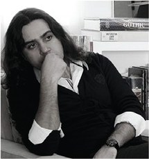
- Born1980
- NationalityIranian
- Works10
- Dated2013–2015
StatementAbout the work
Last music in Eden
"The last music in the Garden of Eden" is a symbolic statement of a human being, expressed beyond any existence and yet, at the very same time, experiences the nothingness. It's a story of imaginations, floating in a human body that, in a symbolic and theater-like space, synthesizes and narrates the fundamental concepts like love and hate, life and death.
A story, bearing all those concepts and still, filled with the hallucinations of the placelessness...
At a time, when a viewer of mirror-like world, with all his surroundings, steps into a work of art, gives a new life to the vacant figure and moves out of it; all of a sudden, a deep loss, embraces the entire body of that figure.
The very loss, he is waiting on its bedside for another viewer to come. These moves, back and forth, continue for a period of time, up until the moment, when the time and place dimensions are replaced by movements in the mirror-like space and everything gets out of the frigidity of the frame.
Stepping inside each work of art is like solving a puzzle in the simplest manner, done without any exaggeration and hallucination, and each and every person will have a unique and unrepeatable experience in any silver frame.
In the end, the impact of fine fingers of fictional literature, along with a pleasant blend of music, has placed itself on the body of these works in a way that they, more than ever, represent the conflicts between the most powerful forces of nature — life, love, death...
Works10 artworks

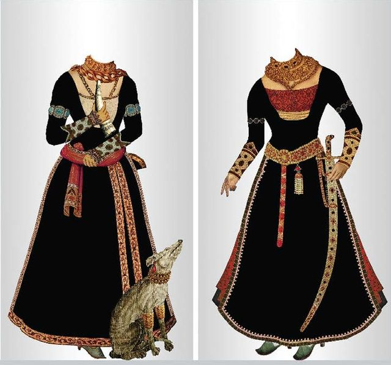

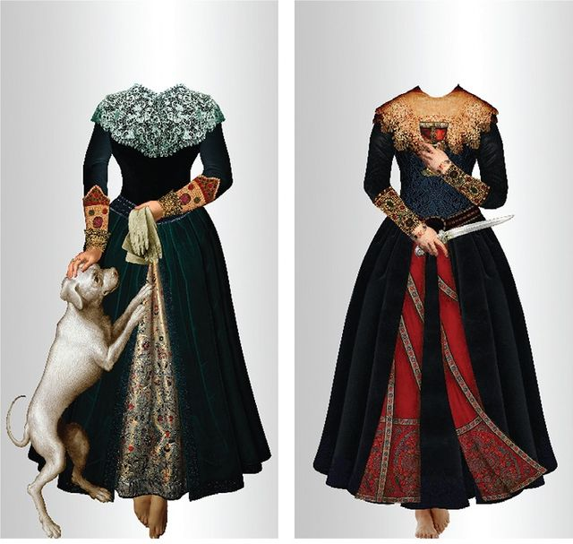

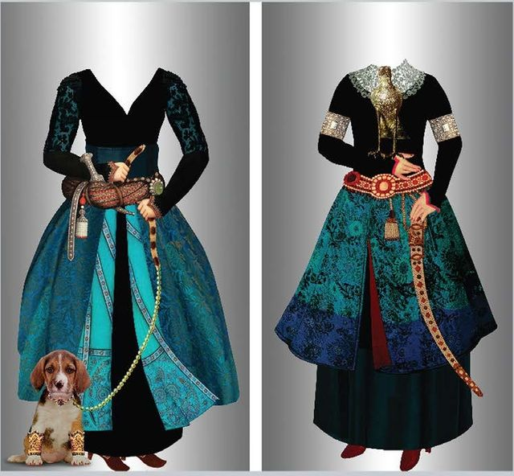

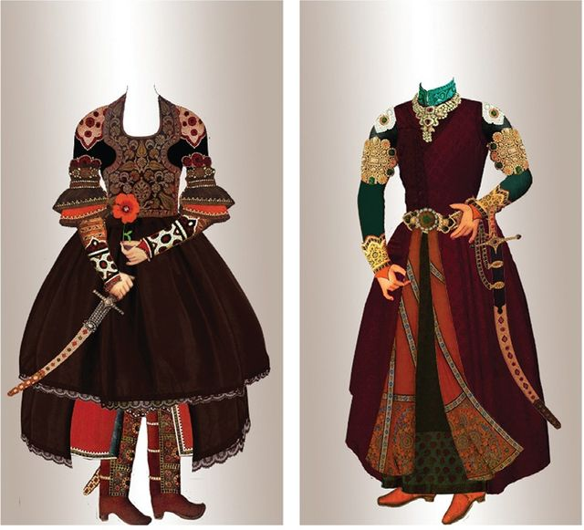

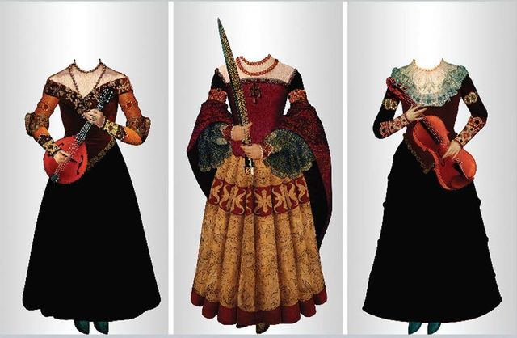
The history from Assyrian Reliefs to Apadana patterns, Ghaznavi Palaces, Safavi Mosques is paradoxical tales of beautiful kings, cruel beauties, Faithful traitors, coward champions, prosper prostitutes, traditional modernity, modern calcification and all in a context called Iran.
The reflection of the steel sheet and its interference with the objective reality is like the integration of history and the present.
At this course of my works, I have tried to provide the opportunity for such a vivid symbiosis and create an artificial appearance to some extent. The result is refreshing and renewing the past and not adoring or denouncing the history. Yet, the random and cuts don't come back to the ancient ones, whatever is seen are all the most familiar illusions of our most strange feelings, a place named Iran, Strange and them most familiar and common dream of all Persia-Speakers.
Arash has created an artificial environment by drawing from historical figures of a bygone era. The result is refreshing: renewing the past and not allowing itself to get bogged down in the mire of nostalgia.
These works often portray classical Iranian regal figures but with a playful twist incorporating modern symbols of decadent living.

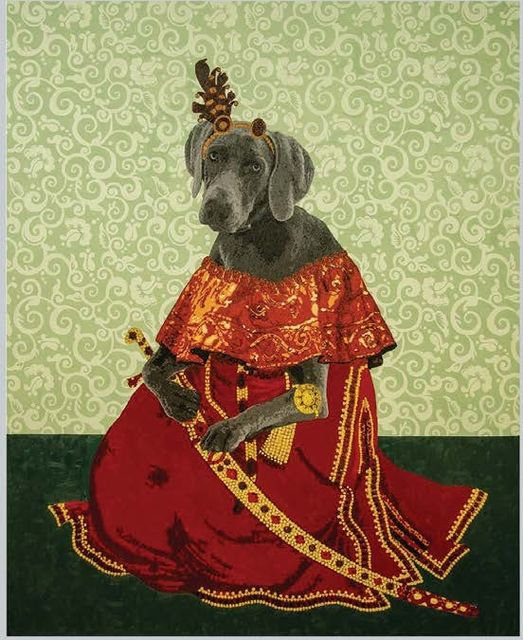

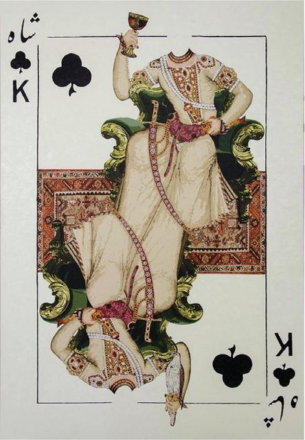

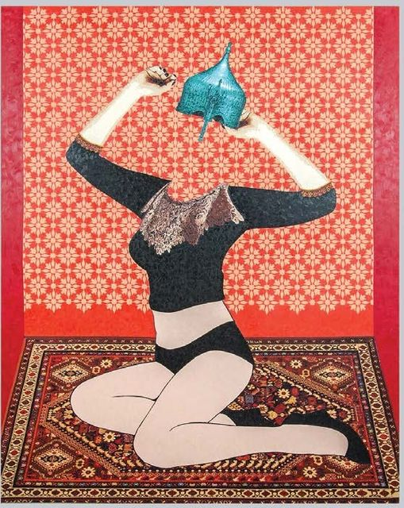

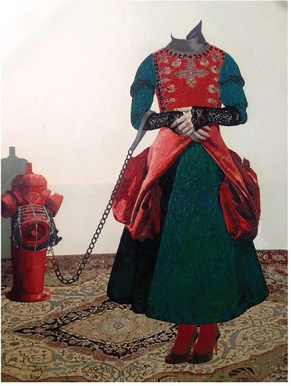

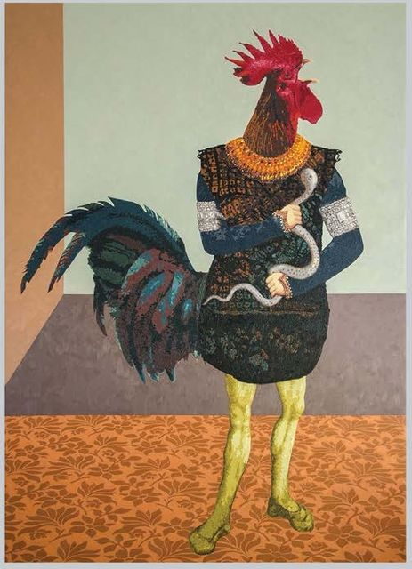
History of experienceBiography · education · exhibitions · awards
Education
- 2003Industrial Engineering|Tehran – Iran
Solo exhibitions
- 2016Last Music in Eden, Seyhoun Art Gallery|Tehran – Iran
- 2014Registered Trade Marks Vol 2, The Mine Gallery|Dubai
- 2013Snap Shot, Shirin Art Gallery|Tehran – Iran
- 2011Registered Trade Marks, HomaGallery|Tehran – Iran
Group exhibitions
- 2015Seyhoun Gallery 2|Tehran – Iran
- 2014Seyhoun Gallery 2|Tehran – Iran
- 2013Scoop Art Show Miami, USA: By Shirin Gallery New York
- 2013Scoop Art Show, Basel, Switzerland: By Shirine Gallery Tehran
- 2012The Young Collectors, Ayyam Gallery|Dubai
- 2012International modern and contemporary art, Opera Gallery|Dubai
- 2012Salsali Museum, Dubai, UAE: Magic Of Persia Selected Artists.
- 2011Selected Artists Group Exhibition, HomaGallery|Tehran – Iran
- 2011Tehran Art Expo, ShirinGallery|Tehran – Iran
Source: the Sobhan Gallery artist catalogue “Arash Nazari.pdf”.